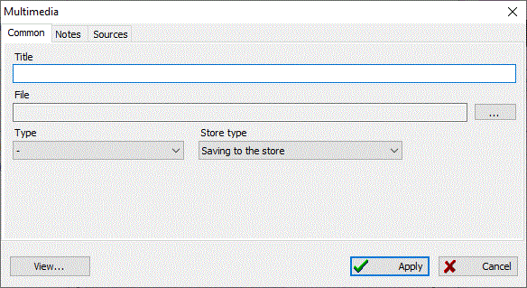

Multimedia records store documents, photos, audio, and video.
There are three ways you can store multimedia content in the database: store as direct link to file, store as archive, and store in "storage". Please read the Files storing article for additional information.
Multimedia records are found in a united directory for the entire digitized multimedia content available. At any time, you can access this directory and view a required file. Photos, as a type of multimedia record, can be used as a portrait for a person.
There is one crucial point when you are adding new multimedia records to the database: use any external file carefully. You should not add files with a size more than 10 MB using the "In archive" storage type. Usually such large files are audio or video content with very poor compression rates. This would increase the size of the database dramatically. It is recommended to store large content either as a link to an external file or as "storage"—a special directory located in the same folder as the database.

The "Multimedia" tab on the main working window contains a united table with all the multimedia content available in the database. A record summary to the right of the table shows information about the selected record, and references made from other records to this one.
See also: Note, Source, Storing multimedia content.